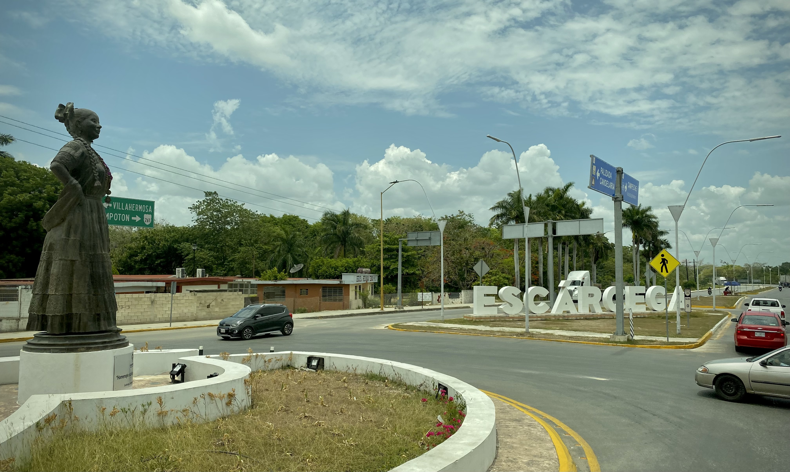
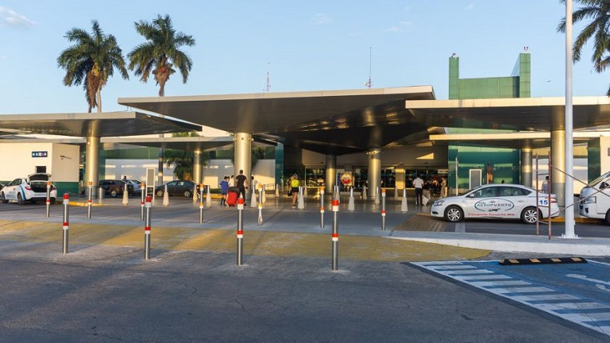
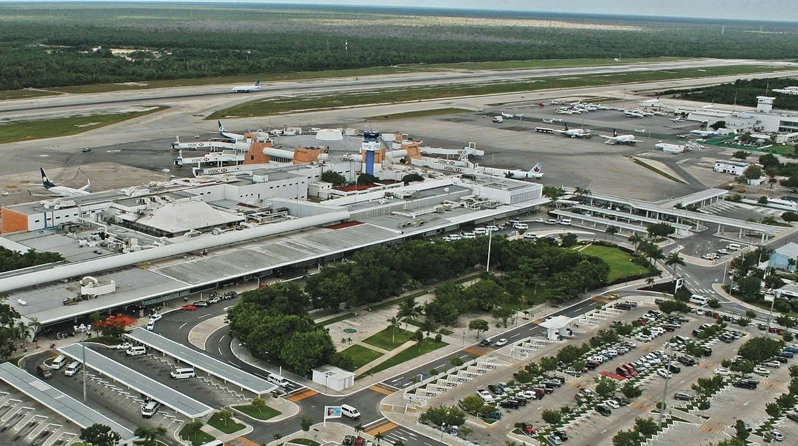
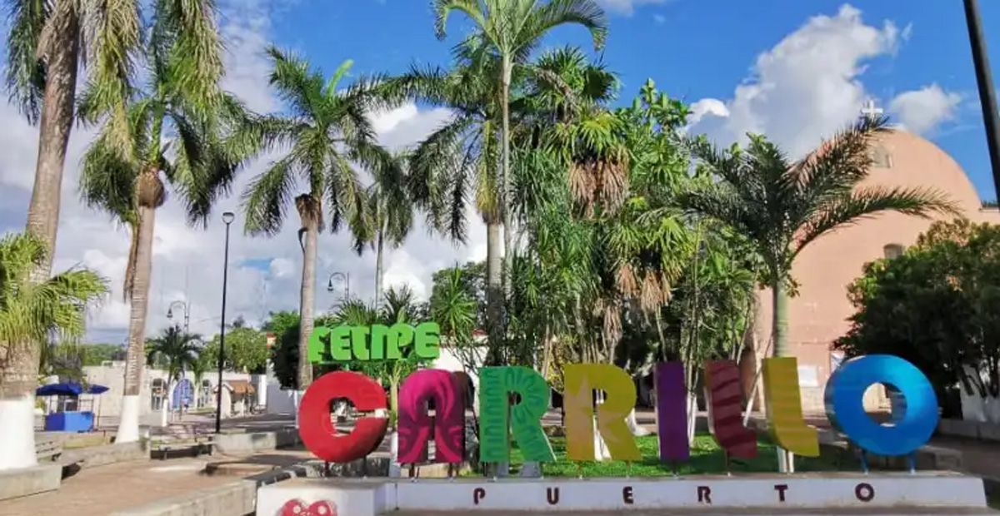

ZONAS TURISTICAS
Tramo 1: Palenque-Escárcega.
Estación: Palenque, Chiapas.
Cascadas de Agua Azul
Ubicadas aproximadamente a 64 km al norte de Palenque, las Cascadas de Agua Azul son una serie de cascadas y pozas de agua de color turquesa que forman uno de los paisajes más hermosos de Chiapas. Es un lugar perfecto para nadar, disfrutar de la naturaleza y hacer senderismo. Las cascadas de Agua Azul están abiertas al público en general de lunes a domingo en un horario de 8:00 a 18:00 horas. Para entrar a las cascadas es necesario pagar dos cuotas de recuperación en dos puntos diferentes. En total gastarás menos de $50 pesos.
Misol-Ha
A unos 20 km al sureste de Palenque se encuentra la cascada de Misol-Ha, una impresionante caída de agua de aproximadamente 35 metros de altura. Puedes admirarla desde abajo o incluso caminar detrás de la cascada. Es un lugar maravilloso para refrescarse y tomar fotografías. Costo de entrada a Misol Ha y precios a considerar Estos son los costos que debes considerar dentro del centro ecoturístico:Precio de entrada a Misol-Ha es de $30 MXN por persona Precio de Chaleco salvavidas por día: $70 pesos por día.
Bonampak
Aproximadamente a 140 km al sureste de Palenque se encuentra el sitio arqueológico de Bonampak, famoso por sus antiguos murales mayas excepcionalmente bien conservados. Los murales muestran escenas de batallas y ceremonias, y son considerados algunos de los mejores ejemplos de arte maya. Los precios para la zona arqueológica de Bonampak, varían según el día y el público que se dirija, aquí te dejo los precios de entrada: público en general $80 MXN. Niños menores de 13 años, estudiantes y profesores con identificación y personas de la tercera edad entran ¡GRATIS!.
Yaxchilán
Ubicado a orillas del río Usumacinta, cerca de la frontera con Guatemala, se encuentra el impresionante sitio arqueológico de Yaxchilán. Para llegar allí, debes tomar un viaje en bote a través del río, lo que agrega emoción a la experiencia. Yaxchilán cuenta con numerosas estructuras y estelas mayas talladas. PRECIO ENTRADA 65 MXN entrada a las ruinas. Las lanchas son de 10 personas, puedes compartir el costo total, unos 900 MXN, entre varios viajeros. Las lanchas a Yaxchilán salen desde Frontera Corozal (45 minutos navegando). Los domingos la entrada del INAH es gratis para mexicanos y residentes permanentes.
Palenque
La zona arqueológica de Palenque es una de las ciudades más notables del mundo maya. Además, está en una zona de selva tropical alta donde abundan cascadas y ríos. La ciudad maya de Palenque fue uno de los principales centros urbanos y ceremoniales del mundo maya. La zona cuenta con más de 200 estructuras. Las personas que tienen acceso gratuito a la zona arqueológica de Palenque son las siguientes:
- Estudiantes, maestros y profesores del Sistema Educativo Nacional.
- Jubilados, pensionados con credencial vigente y gente de la tercera edad (indispensable mostrar credencial INSEN o INAPAM).
- Habitantes de la ciudad de Palenque (indispensable mostrar credencial IFE).
- Discapacitados.
- Menores de 13 años.
Estación: Boca del Cerro, Tabasco.
Villahermosa
La capital del estado de Tabasco, Villahermosa, se encuentra a aproximadamente 40 kilómetros al sureste de Boca de Cerro. Es una ciudad moderna y vibrante con varios atractivos turísticos, como el Parque Museo La Venta, que exhibe esculturas y artefactos olmecas; el Parque-Museo "La Venta" Yumká, un zoológico con especies locales; y el Centro Histórico, donde puedes explorar la Catedral de Villahermosa y otros edificios históricos.
Estación: El Triunfo,Tabasco.
Villahermosa
La capital del estado de Tabasco, Villahermosa, se encuentra a aproximadamente 50 kilómetros al noroeste de El Triunfo. Aquí encontrarás una variedad de atracciones turísticas, como el Parque-Museo La Venta, que exhibe monumentos olmecas, el Museo Regional de Antropología de Tabasco, con una colección de arte y objetos arqueológicos, y el Parque Museo de La Venta Yumká, que combina un zoológico con un parque de aventuras. Parque Museo de Historia” Casa de los Azulejos”.
Parque Estatal Agua Blanca
Ubicado a unos 45 kilómetros al sur de El Triunfo, este parque estatal ofrece hermosos paisajes naturales, cascadas y áreas para acampar. Puedes disfrutar de caminatas, nadar en las pozas naturales y disfrutar de un día al aire libre en medio de la exuberante vegetación.
Comalcalco
Aproximadamente a 70 kilómetros al noroeste de El Triunfo se encuentra la ciudad de Comalcalco, famosa por sus antiguas ruinas mayas. El sitio arqueológico de Comalcalco es único debido al uso predominante del ladrillo en sus estructuras, en contraste con la piedra utilizada en otros sitios mayas. Puedes explorar las pirámides, los templos y aprender sobre la historia de esta antigua ciudad.
Paraíso
Alrededor de 60 kilómetros al sureste de El Triunfo se encuentra la ciudad de Paraíso, conocida por sus hermosas playas y su ambiente relajado. Aquí puedes disfrutar del sol y el mar en lugares como Playa Varadero y Playa Brujas. Además, puedes visitar la Reserva Ecológica de Pantanos de Centla, que es un importante humedal con una rica biodiversidad.
Paraderos
Tenosique, Tabasco.
Balneario La Encantada
Este balneario está ubicado a unos 30 minutos al suroeste de Tenosique y es un lugar popular para relajarse y disfrutar del agua. Cuenta con varias piscinas naturales alimentadas por arroyos y cascadas, así como áreas verdes para hacer picnic y disfrutar de un día al aire libre. Parque Nacional Laguna de las Ilusiones: Localizado aproximadamente a 1 hora al noroeste de Tenosique, este parque nacional es un lugar ideal para los amantes de la naturaleza. Cuenta con una hermosa laguna rodeada de vegetación exuberante, y ofrece actividades como paseos en lancha, observación de aves y senderismo.
Tramo 2: Escárcega – Calkiní.
Estación: Escárcega, Campeche.
Reserva de la Biosfera Calakmul
Esta reserva de la biosfera es uno de los destinos naturales más importantes de México. Aquí encontrarás la antigua ciudad maya de Calakmul, rodeada de selva tropical. Puedes explorar las pirámides y disfrutar de la belleza natural de la región, además de observar la flora y fauna silvestre.
Laguna de Miramar
Aunque se encuentra un poco más alejada, la Laguna de Miramar es un hermoso cuerpo de agua rodeado de selva tropical. Puedes disfrutar de paseos en lancha, kayak o simplemente relajarte junto a la laguna y disfrutar de la tranquilidad del entorno.
Estación: Edzná, Campeche
Ciudad de Campeche
Se encuentra a aproximadamente 61 kilómetros de Edzná y es la capital del estado de Campeche. Esta ciudad colonial cuenta con un centro histórico muy bien conservado, declarado Patrimonio de la Humanidad por la UNESCO. Puedes disfrutar de su arquitectura colonial, visitar la Catedral, el Fuerte de San Miguel, el baluarte de San Francisco, entre otros lugares de interés.
Zona Arqueológica de Becán
Se encuentra a aproximadamente 73 kilómetros al sureste de Edzná. Becán es otro importante sitio arqueológico maya con una gran cantidad de estructuras y una impresionante muralla defensiva. Puedes explorar las pirámides, palacios y observar la arquitectura típica de la cultura maya.
Zona Arqueológica de Calakmul
Esta zona arqueológica se encuentra a unos 120 kilómetros al sureste de Edzná, ya cerca de la frontera con Guatemala. Calakmul es un sitio arqueológico muy extenso y también ha sido declarado Patrimonio de la Humanidad por la UNESCO. Además de las impresionantes estructuras, se encuentra en medio de una reserva de la biosfera, por lo que también ofrece una gran belleza natural.
Playa Bonita
Si te interesa disfrutar de la playa, puedes dirigirte a Playa Bonita, ubicada en Ciudad del Carmen, a unos 152 kilómetros al norte de Edzná. Es una playa popular entre los locales y turistas, donde puedes relajarte, disfrutar del sol y el mar.
Estación: San Francisco de Campeche, Campeche
Ciudad Amurallada de Campeche
A unos 40 kilómetros al sureste de San Francisco se encuentra la ciudad de Campeche, una joya colonial declarada Patrimonio de la Humanidad por la UNESCO. Puedes explorar su impresionante arquitectura colonial, sus murallas históricas y sus calles empedradas. No te pierdas la Catedral de Campeche y el Malecón de la ciudad.
Tramo 3: Calkiní - Izamal.
Estación: Mérida Aeropuerto, Yucatán.
Mérida
La propia ciudad de Mérida es un importante centro turístico en la región. Puedes explorar su centro histórico, con su hermosa arquitectura colonial, la Catedral de Mérida, el Paseo de Montejo y sus museos, como el Gran Museo del Mundo Maya. Además, puedes disfrutar de la rica gastronomía yucateca y visitar mercados tradicionales como el Mercado Lucas de Gálvez.
Chichén Itzá
Aproximadamente a 120 km al este de Mérida se encuentra Chichén Itzá, una de las Nuevas Siete Maravillas del Mundo. Es un antiguo sitio arqueológico maya y un importante destino turístico. Aquí puedes admirar la famosa pirámide de Kukulcán, el Templo de los Guerreros, el Observatorio y otras estructuras impresionantes.
Uxmal
Ubicado a aproximadamente 80 km al sur de Mérida, Uxmal es otro destacado sitio arqueológico maya. Se caracteriza por su arquitectura Puuc, con edificios ornamentados y detalles escultóricos. La Pirámide del Adivino y el Cuadrángulo de las Monjas son algunas de las estructuras más destacadas aquí.
Celestún
Si te gusta la naturaleza, puedes visitar Celestún, una reserva de biosfera y santuario de flamencos rosados. Este hermoso lugar se encuentra a unas dos horas en coche al oeste de Mérida. Puedes tomar un paseo en bote por los manglares, observar aves y disfrutar de sus playas tranquilas.
Izamal
Conocida como la "Ciudad Amarilla" debido a que muchos de sus edificios están pintados de este color, Izamal es un encantador pueblo colonial ubicado a unos 70 km al este de Mérida. Aquí encontrarás la Pirámide de Kinich Kakmó, la segunda pirámide más grande de Yucatán, y el Convento de San Antonio de Padua, un importante sitio histórico y religioso.
Estación:Teya, Yucatán.
Cenotes
Los cenotes son formaciones naturales únicas en la península de Yucatán y ofrecen experiencias de natación y buceo inolvidables. Algunos cenotes cercanos a Teya incluyen el Cenote Yokdzonot, el Cenote X'batún y el Cenote X-Canché. Estos lugares te permiten explorar aguas cristalinas en cuevas y sumergirte en la belleza natural de la región.
Estación:Izamal, Yucatán.
Ruta Puuc
La Ruta Puuc es un recorrido turístico que incluye varias antiguas ciudades mayas en la región de Puuc, al sur de Izamal. Además de Uxmal, esta ruta te lleva a otros sitios como Kabah, Sayil y Labná, donde podrás explorar más estructuras mayas impresionantes y aprender sobre la cultura y la historia de la región.
Paradero
Mexcanú, Yucatán.
Progreso
Esta ciudad costera se encuentra a aproximadamente 45 kilómetros de Mexcanú y es un destino popular para los turistas que desean disfrutar de las playas de Yucatán. Progreso cuenta con una amplia franja de arena dorada y aguas tranquilas, además de restaurantes y bares a lo largo del malecón. También es un punto de partida para explorar la Reserva de la Biosfera Ría Celestún, hogar de flamencos rosados y otros animales salvajes.
Paradero
Tixkokob, Yucatán.
Tramo 4:Izamal – Cancún.
Estación:Chichen Itzá, Yucatán.
Valladolid
Esta encantadora ciudad colonial se encuentra a solo unos 45 minutos en automóvil al este de Chichén Itzá. Valladolid es conocida por su arquitectura colonial bien conservada, su hermosa plaza central y su impresionante cenote Zaci, donde puedes nadar y refrescarte.
Ek Balam
Ubicado a aproximadamente 30 minutos al norte de Chichén Itzá, Ek Balam es un sitio arqueológico maya menos conocido pero igualmente impresionante. Aquí puedes explorar las antiguas estructuras, subir la gran pirámide y disfrutar de vistas panorámicas desde la cima.
Cenote Ik Kil
Este cenote es una visita obligada si estás en la zona de Chichén Itzá. Se encuentra a solo unos minutos en automóvil del sitio arqueológico. Ik Kil es un cenote abierto con paredes verticales cubiertas de vegetación exuberante. Puedes nadar en sus aguas frescas y disfrutar de la belleza natural del lugar.
Cenote Yokdzonot
Otro cenote cercano a Chichén Itzá es el Cenote Yokdzonot, que se encuentra a unos 20 minutos en automóvil hacia el oeste. Este cenote ofrece una experiencia más auténtica y menos concurrida que algunos de los cenotes más populares. Puedes nadar, hacer snorkel y relajarte rodeado de la naturaleza.
Cenote Hubiku
Situado a unos 15 minutos en automóvil al este de Chichén Itzá, el Cenote Hubiku es otro impresionante cenote abierto. Cuenta con aguas cristalinas y una cueva subterránea donde puedes explorar y admirar las formaciones rocosas. También hay instalaciones turísticas, como restaurantes y áreas de descanso.
Estación:Valladolid, Yucatán.
Chichén Itzá

Ubicada a unos 50 kilómetros al oeste de Valladolid, Chichén Itzá es una de las siete maravillas del mundo moderno. Este antiguo sitio arqueológico maya es famoso por su icónico templo piramidal llamado "El Castillo" o "Templo de Kukulcán". Chichén Itzá es una visita obligada para cualquier persona interesada en la historia y la arqueología.
Ek Balam
Situada a unos 30 kilómetros al norte de Valladolid, Ek Balam es otro importante sitio arqueológico maya. Aquí puedes explorar pirámides, plazas y estructuras antiguas, y puedes subir a la cima de la Acrópolis para disfrutar de una vista panorámica del área circundante.
Cenotes
Los cenotes son formaciones naturales de agua dulce que se encuentran en todo el estado de Yucatán. Estos pozos sagrados son ideales para nadar, practicar esnórquel o simplemente disfrutar de su belleza. Algunos cenotes cercanos a Valladolid incluyen el Cenote Zaci, el Cenote Samulá y el Cenote Xkeken.
Izamal
Esta encantadora ciudad colonial se encuentra a unos 70 kilómetros al este de Valladolid. Izamal es conocida como la "Ciudad Amarilla" debido al color amarillo brillante de la mayoría de sus edificios. Aquí puedes visitar el Convento de San Antonio de Padua, uno de los más grandes de América Latina, y disfrutar de un paseo por sus pintorescas calles empedradas.
Reserva de la Biosfera Ría Lagartos
Ubicada a aproximadamente 140 kilómetros al norte de Valladolid, esta reserva natural es un paraíso para los amantes de la naturaleza y la observación de aves. Aquí puedes explorar manglares, avistar flamencos rosados y otras especies de aves, e incluso visitar el famoso "Ojo de Agua" en Las Coloradas, una laguna rosada debido a su alta concentración de sal.
Estación:Nuevo Xcán, Yucatán.
Playa del Carmen
Ubicada a aproximadamente 160 km al sureste de Nuevo Xcán, Playa del Carmen es uno de los destinos turísticos más populares de la Riviera Maya. Cuenta con hermosas playas de arena blanca, una vibrante vida nocturna, restaurantes, tiendas y una amplia gama de actividades acuáticas.
Tulum
Situada a unos 170 km al sureste de Nuevo Xcán, Tulum es conocida por sus impresionantes ruinas mayas junto al mar. El sitio arqueológico de Tulum ofrece una vista panorámica del Mar Caribe y es uno de los lugares más fotografiados de México. Además de las ruinas, Tulum también tiene hermosas playas y cenotes para explorar.
Isla Mujeres
Esta encantadora isla se encuentra frente a la costa de Cancún y se puede llegar en ferry desde la ciudad. Aproximadamente a 180 km de Nuevo Xcán, Isla Mujeres ofrece playas de arena blanca, aguas turquesas y una atmósfera relajada. También puede disfrutar de actividades como snorkel, buceo y paseos en barco.
Cancún
Aunque está más alejado de Nuevo Xcán, a unos 220 km al sureste, Cancún es uno de los destinos turísticos más conocidos de México. Ofrece playas de clase mundial, una animada vida nocturna, resorts de lujo, restaurantes, centros comerciales y actividades para toda la familia.
Paraderos
Xibalbá, Yucatán.
Leona Vicario, Yucatán.
Parque Nacional Isla Contoy
Si estás interesado en la naturaleza y la vida silvestre, puedes considerar una visita al Parque Nacional Isla Contoy. Esta reserva natural se encuentra frente a la costa norte de la península de Yucatán y es el hogar de una gran variedad de aves marinas, tortugas marinas y arrecifes de coral. Se pueden hacer excursiones en barco desde Cancún o Playa del Carmen para explorar la isla y disfrutar de su belleza natural.
Tramo 5 Norte: Cancún-Playa del Carmen
Estación:Cancún Aeropuerto, Quintana Roo:
Mirador de playa delfines
Es una hermosa playa, a la vista un precioso paisaje y también las típicas letras de CANCÚN donde los turistas se toman fotos con un hermoso fondo turquesa.
Ventura Park
Ventura Park es un parque de diversiones y entretenimiento que ofrece una variedad de atracciones emocionantes para todas las edades. Se ubica en la zona hotelera en Cancún. Precio regular por adulto es $899 MXN pesos. (cualquier por arriba de 12 años). Precio regular por menor es $749 MXN pesos. (cualquier arriba de 1.07 mts y menor a 11 años).
Marina Sunrise
Marina Sunrise en Cancún es una marina y complejo turístico ubicado en la Zona Hotelera de Cancún, México. Ofrece una variedad de servicios y actividades relacionadas con el mar y las actividades acuáticas. La Marina Sunrise proporciona servicios de alquiler de embarcaciones, como yates, catamaranes y lanchas. El precio es de $1,243.74.MXN por adulto
SeaLife Marina (Cancún)
SeaLife Marina en Cancún es un complejo turístico ubicado en la zona hotelera de Cancún, México. Es un destino popular para los amantes del mar y la vida marina. La principal atracción de SeaLife Marina es su parque acuático, que ofrece una variedad de actividades acuáticas emocionantes, como snorkel, buceo, paseos en lancha y aventuras en jet ski. El precio es de $1,079.15 MXN por persona.
Dolphinaris (Cancún)
Dolphinaris es un parque temático ubicado en Cancún, México, que ofrece experiencias interactivas con delfines. El parque está diseñado para brindar a los visitantes la oportunidad de interactuar y aprender sobre estos increíbles mamíferos marinos. El precio es de $1,298MXN
Estación:Puerto Morelos, Quintana Roo (cerca del palacio municipal):
Playa de Puerto Morelos
La playa es uno de los mayores atractivos de Puerto Morelos. Sus aguas cristalinas y su suave arena blanca ofrecen un lugar perfecto para relajarse.
Arrecife Nacional de Puerto Morelos
Este Arrecife de coral es un destino popular para el buceo y el snorkel. Los visitantes pueden explorar la vida marina de este arrecife.
Jardín Botánico Dr. Alfredo Barrera Marín
Este jardín botánico es un lugar tranquilo y natural donde los visitantes pueden disfrutar de la flora y fauna local.
Ruta de los cenotes
Cerca de Puerto Morelos, hay una serie de cenotes que forman parte de la ruta de los cenotes. Estos cuerpos de agua dulce son ideales para nadar, hacer snorkel o incluso bucear.
Parque Croco Cun
Este parque ecológico ofrece a los visitantes la oportunidad de aprender sobre la fauna local, incluyendo cocodrilos, monos araña, tapires y aves exóticas.
Puerto Morelos plaza principal
La plaza principal de Puerto Morelos es un lugar animado donde los visitantes pueden disfrutar de restaurantes, tiendas de artesanía, bares, etc.
Estación:Playa del Carmen
Quinta Avenida
Es la calle principal de Playa del Carmen, conocida por su ambiente vibrante y animado. A lo largo de esta avenida encontraras restaurantes, bares, tiendas, galerías de arte, etc.
Playacar
Es una exclusiva zona residencial y turística situada en el sur de Playa del Carmen. Aquí encontraras lujosos resorts, campos de golf y muchas playas. (se encuentra a 15 mins de la estación)
Xcaret
: Es un parque eco-arqueológico que combina la belleza natural de la Riviera maya con actividades culturales y acuáticas. Aquí podrás encontrar ríos subterráneos, nadar con delfines, explorar cuevas, descubrir la flora y fauna de la región.
Cozumel
Aunque no está directamente en Playa del Carmen, la isla de Cozumel se encuentra justo enfrente y es un popular destino turístico por sus arrecifes de coral, aparte de poder bucear y snorkear.
Tramo 5 Sur: Playa del Carmen-Tulum
Estación: Tulum, Quintana Roo
Ruinas de Tulum
Ubicada en un acantilado con vistas al mar Caribe, las Ruinas de Tulum es uno de los principales atractivos turísticos de la región. Este sitio arqueológico cuenta con antiguas estructuras mayas, incluyendo el Templo del Dios del Viento y el Castillo. El acceso cuesta $90 pesos mexicanos y el horario de visita es de 8 am a 5 pm y está abierto todos los días. En auto esta aproximadamente a 10 mins de la ciudad de Tulum.
Xel-ha
Es un parque acuático y reserva ecológica ubicada a unos 14 km al norte de Tulum. Ofrece actividades como snorkel, nado con delfines y exploración de cenotes.El tiempo de viaje en auto desde Tulum a Xel-ha es de aproximadamente 20 minutos y el precio por persona es de: $2,137.63MXN.
Cobá
Esta antigua ciudad mayase encuentra a unos 45 kilómetros al noroeste de la ciudad de Tulum. La zona arqueológica de coba es conocida por su pirámide llamada "Nogoch Mul". El tiempo de viaje en auto es de 40 minutos aproximadamente. El horario para realizar la visita a las ruinas de Coba es: De lunes a domingo desde las 8:00 hasta las 18:00 y el billete de entrada tiene un precio de $80 pesos mexicanos.
Reserva de la Biosfera de Sian Ka'an
Situada al sur de Tulum, la reserva de la “Biosfera de Sian Ka'an” es un área natural protegida que alberga una gran diversidad de flora y fauna. El tiempo de la ciudad de Tulum es de 30 minutos aproximadamente en auto. La entrada tiene un valor de $100MXN por persona.
Paraderos
Xcaret
Parque Xplor
Xplor es un parque temático de aventuras ubicado en la Riviera Maya, en México. Es parte del grupo Xcaret, que también opera otros parques temáticos y atracciones turísticas en la región. Xplor ofrece una variedad de actividades emocionantes y naturales en un entorno selvático. El precio es de $2,247.23 MXN
Parque Xenses
Xenses es un parque temático ubicado en la Riviera Maya, México. Algunas de las experiencias que se pueden disfrutar en Xenses incluyen recorridos por un pueblo mágico, caminar por un laberinto sensorial, flotar en un río de sal, nadar en un cenote, explorar un jardín de enanitos y experimentar efectos ópticos y visuales sorprendentes. El precio de la entrada para adulto es de $1,482MXN y el de niños es de $1,111MXN
Puerto Aventuras, Quintana Roo
Aldea Tierra Nueva Cielo Nuevo
El cenote "La Casa del Alux" es un sitio turístico ubicado en el estado de Quintana Roo, en México. La Casa del Alux es un cenote en particular que ha sido acondicionado y adaptado para recibir visitantes. Recibe su nombre de la leyenda maya del "alux", que es una especie de duende o espíritu protector de la naturaleza en la cultura maya.
Akumal
Playa Akumal
La playa principal de Akumal es una de las principales atracciones de la zona. Sus aguas turquesas y su arena blanca la convierten en un lugar perfecto para nadar, hacer snorkel o simplemente relajarse bajo el sol.
Bahía de Akumal
Esta hermosa bahía es famosa por ser uno de los lugares donde se puede nadar con tortugas marinas. Puedes alquilar equipo de snorkel y explorar el arrecife de coral mientras disfrutas de la compañía de estas fascinantes criaturas marinas.
Akumal Pueblo
Además de las hermosas playas y atracciones naturales, Akumal también tiene un encantador pueblo donde puedes explorar tiendas, restaurantes y disfrutar de la auténtica cocina mexicana.
Tramo 6: Tulum-Bacalar
Estación:Felipe Carrillo Puerto, Quintana Roo
Zona Arqueológica de Chunhuhub
A unos 30 kilómetros de Felipe Carrillo Puerto se encuentra esta zona arqueológica maya. Aquí podrás explorar ruinas antiguas y aprender sobre la cultura y la historia de los antiguos habitantes de la región. Aproximadamente 30 minutos en automóvil.
Pueblo Maya de Tihosuco
A pocos kilómetros de Felipe Carrillo Puerto se encuentra el pueblo de Tihosuco, conocido por su historia y cultura maya. Aquí puedes visitar la iglesia de San Antonio de Padua, que data del siglo XVI, y explorar los alrededores para descubrir vestigios de la época colonial y maya. Aproximadamente 15 minutos en automóvil desde Felipe Carrillo Puerto.
Cenote Azul
Este cenote se encuentra a unos 40 kilómetros de Felipe Carrillo Puerto. Es un lugar perfecto para disfrutar de un refrescante baño en sus aguas cristalinas. También puedes practicar snorkel y buceo, ya que ofrece una visibilidad impresionante. Alrededor de 40 minutos en automóvil desde Felipe Carrillo Puerto.
X'unaan-Ha
Es una hermosa playa ubicada a unos 25 kilómetros de la ciudad. Aquí encontrarás aguas cristalinas, arena blanca y una atmósfera tranquila. Es un lugar ideal para relajarse, nadar y disfrutar del sol. Aproximadamente 30 minutos en automóvil desde Felipe Carrillo Puerto.
Estación:Bacalar, Quintana Roo
Laguna de los Siete Colores:
La principal atracción de Bacalar es su impresionante laguna, conocida como la Laguna de los Siete Colores. Sus aguas cristalinas cambian de tonalidad, mostrando diferentes tonos de azul y verde.
Fortaleza de San Felipe Bacalar
Esta fortaleza histórica fue construida en el siglo XVIII para proteger a la ciudad de los ataques de piratas. Hoy en día, se ha convertido en un museo que alberga exhibiciones sobre la historia de Bacalar y ofrece vistas panorámicas de la laguna desde sus murallas.
Cocalitos
Esta pequeña laguna se encuentra cerca de Bacalar y es famosa por sus estromatolitos, estructuras biológicas formadas por microorganismos que datan de millones de años atrás. Los visitantes pueden caminar sobre las pasarelas de madera que rodean los estromatolitos y aprender sobre su importancia ecológica.
Pueblo Mágico de Bacalar
El centro histórico de Bacalar, conocido como Pueblo Mágico, es encantador y pintoresco. Aquí encontrarás calles adoquinadas, casas coloridas, tiendas de artesanías y restaurantes que ofrecen deliciosa comida local. Pasear por el pueblo es una forma maravillosa de sumergirse en la cultura y la vida cotidiana de Bacalar.
Estación:Chetumal, Quintana Roo
Malecón de Chetumal
El Malecón es un paseo marítimo ubicado a lo largo de la bahía de Chetumal. Ofrece hermosas vistas del mar, áreas verdes, áreas para caminar y andar en bicicleta, así como numerosos restaurantes y cafés. Al estar en el centro básicamente te puedes desplazar caminando y llegar en pocos minutos
Museo de la Cultura Maya
Este museo es una parada obligada para los amantes de la historia y la cultura maya. Exhibe una amplia colección de artefactos y piezas arqueológicas de la antigua civilización maya que habitó la región. Se ubica en el centro de Chetumal básicamente te puedes desplazar caminando y llegar en pocos minutos
Parque Ecológico Payo Obispo
Es un parque natural ubicado en las afueras de Chetumal. Ofrece senderos para caminar, áreas de picnic, observación de aves y un cenote para nadar y refrescarse. Este parque se encuentra a unos 30 minutos en automóvil desde el centro de Chetumal, ya que está ubicado a aproximadamente 20 kilómetros al suroeste de la ciudad.
Paraderos
Limones, Othón P. Blanco
El paradero de este tramo es: Limones, que es una comunidad pequeña que se encuentra entre Felipe Carrillo Puerto y Bacalar. Las zonas turísticas más cercanas son:
Bacalar
Bacalar se encuentra aproximadamente 20 a 30 minutos de Limones
La ciudad de Chetumal
Chetumal se encuentra a aproximadamente 25 kilómetros al sureste de Limones. El tiempo de viaje en automóvil entre Limones y Chetumal suele ser de unos 40 minutos.(Aunque estén cerca de Limones, al fin y al cabo, hay estaciones en estas 2 localidades que te podrían llevar sin problema a Bacalar y Chetumal.)
Reserva de la Biosfera de Sian Ka'an
La cual esta a 100km y está a 2 horas en automóvil aproximadamente.
Tramo 7:Tulum-Bacalar
Estaciones:Xpujil, Campeche
Zona Arqueológica de Calakmul
Es uno de los sitios arqueológicos más importantes de la región y fue declarado Patrimonio de la Humanidad por la UNESCO. Calakmul cuenta con imponentes pirámides, plazas, estelas y una gran biodiversidad en su entorno selvático. El precio es de $250MXN por persona.
Zona Arqueológica de Becán
A aproximadamente 10 kilómetros de Xpujil, se encuentra esta antigua ciudad maya. Becán es conocida por su estructura central llamada "El Castillo", que ofrece vistas panorámicas del sitio arqueológico. El precio de entrada es de $55.00MXN.
Zona Arqueológica de Chicanná
Ubicada a unos 20 kilómetros de Xpujil, Chicanná es otro sitio maya importante. Destaca por sus estructuras arquitectónicas, especialmente el "Grupo de los Mascarones", que cuenta con máscaras de estuco que representan deidades mayas. El precio de entrada es de $50.00MXN.
Zona Arqueológica de Hormiguero
A unos 30 kilómetros de Xpujil, se encuentra este sitio arqueológico que se caracteriza por sus estructuras piramidales y su entorno natural. Hormiguero cuenta con un templo principal llamado "El Castillo", así como un juego de pelota y una serie de estelas talladas. La entrada es gratuita.
Paraderos
Conhuas, Campeche
Ciudad de Campeche
La capital del estado, Ciudad de Campeche, es un lugar lleno de encanto y rica historia. La distancia entre Conhuas y la Ciudad de Campeche es de aproximadamente 40 kilómetros. En automóvil el tiempo de viaje tomaría alrededor de 45 minutos a 1 hora.
Zona Arqueológica de Edzná
Aproximadamente a 35 kilómetros de Conhuas, se encuentra la zona arqueológica de Edzná. El tiempo de viaje en automóvil puede ser de aproximadamente 40 minutos a 1 hora.
Paradero
Centenario
Edzná
Este sitio arqueológico maya está ubicado a unos 50 kilómetros al sureste de Centenario. Es famoso por sus impresionantes estructuras, como la Gran Acrópolis y el Templo de los Cinco Pisos. El tiempo de viaje en automóvil puede ser de aproximadamente 1 hora y 30 minutos, considerando una distancia de unos 90 kilómetros.